Onderhoud & herstellingen · 22 oktober 2026
Citroën C3 1.2 PureTech: distributieriem preventief vervangen
Een kleine controle tijdens het onderhoud kan grote motorschade helpen voorkomen. Bij Garage Peter in Bredene besteden we bij motoren met een natte 1.2 PureTech-distributieriem bijzondere aandacht aan de zichtbare staat van de riem.
Preventieve vervanging bij deze Citroën C3
Bij deze Citroën C3 met 1.2 PureTech-benzinemotor vervingen we de distributieriem preventief. We besteedden daarbij ook aandacht aan het oliecircuit en de olieaanzuigzeef.
Wat hebben we uitgevoerd?
- Oude distributieriem verwijderd en een nieuwe riem gemonteerd
- Distributie correct afgesteld met geschikt gereedschap
- Motorcarter gedemonteerd
- Olieaanzuigzeef gecontroleerd en gereinigd
- Toegankelijke delen van het oliecircuit gecontroleerd op vervuiling
- Carter opnieuw gemonteerd en afgedicht
- Verse motorolie en een nieuwe oliefilter geplaatst
Waarom is deze controle belangrijk?
Bij bepaalde 1.2 PureTech-motoren draait de distributieriem in motorolie. Wanneer de riem degradeert, kunnen rubberdeeltjes in de olie terechtkomen en onder meer de olieaanzuigzeef verstoppen. Dat kan de smering van de motor in gevaar brengen. Daarom bekijken we bij een aangetaste riem ook mogelijke vervuiling van het oliecircuit.
Een visuele controle alleen sluit verborgen slijtage niet uit. De onderhoudshistoriek en de voor het voertuig geldende voorschriften en vervangingsintervallen blijven belangrijk.
Fotoreportage van de herstelling

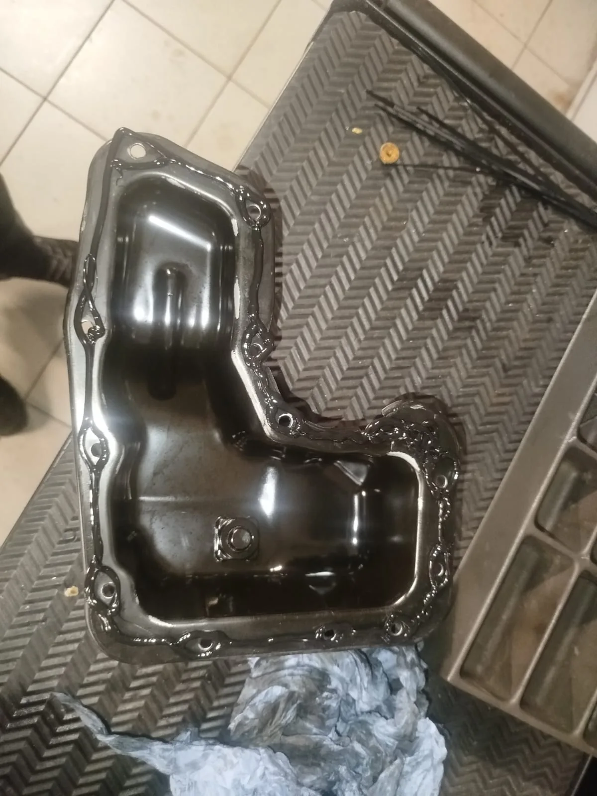
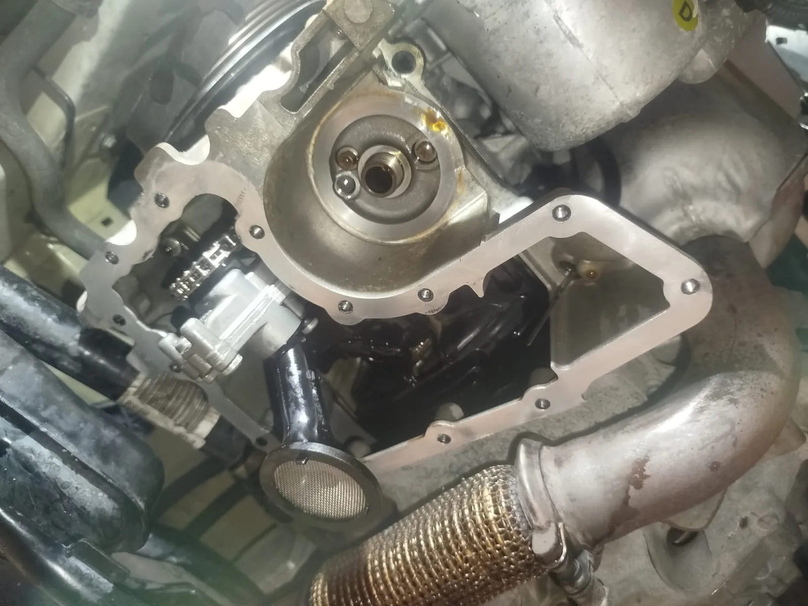

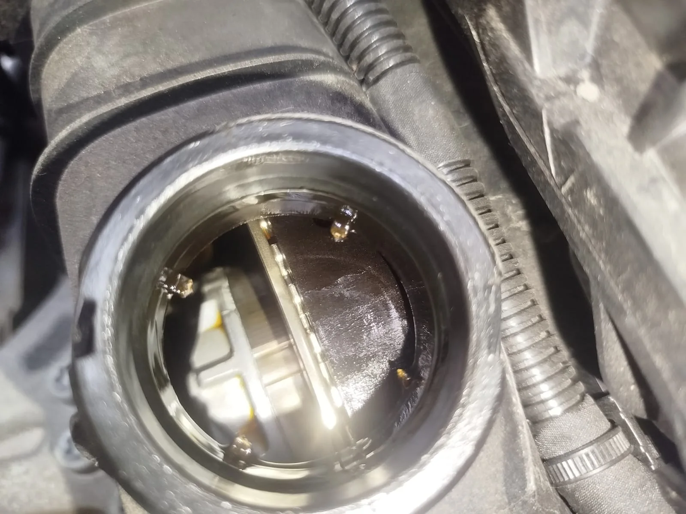
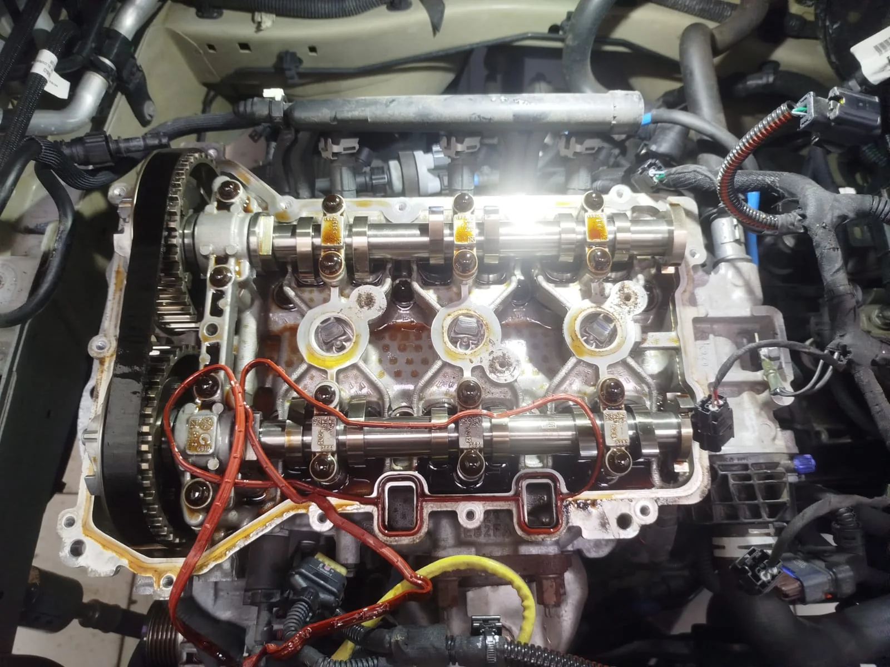

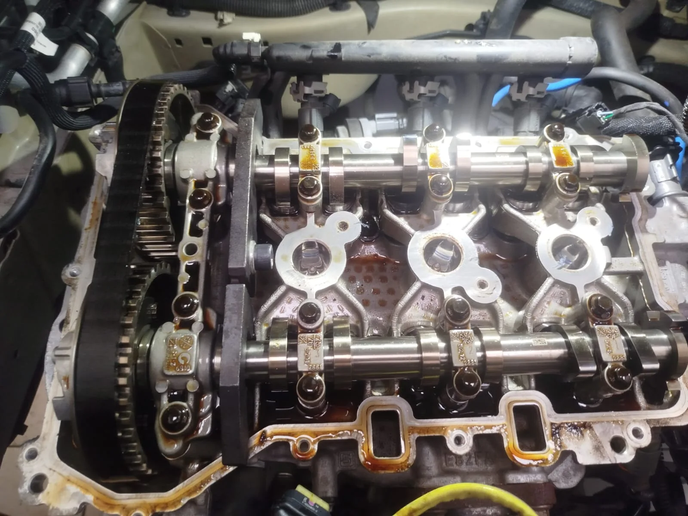
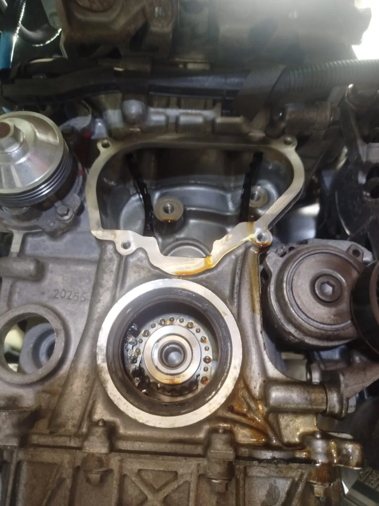

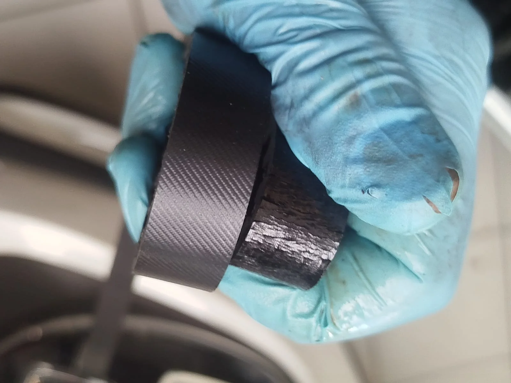
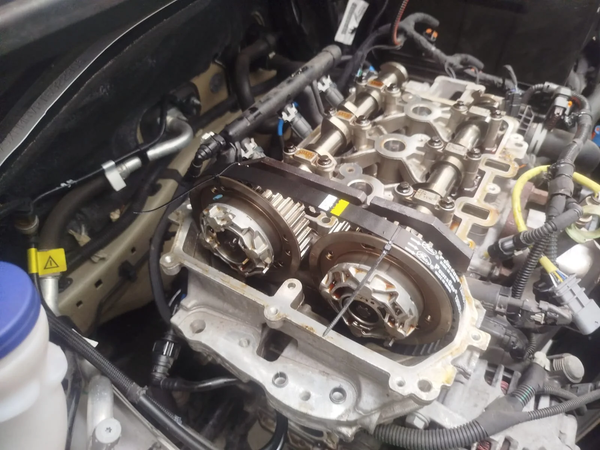

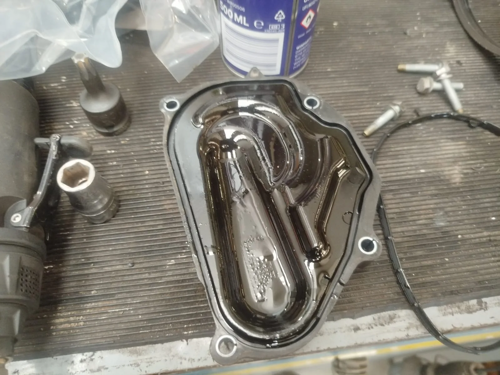
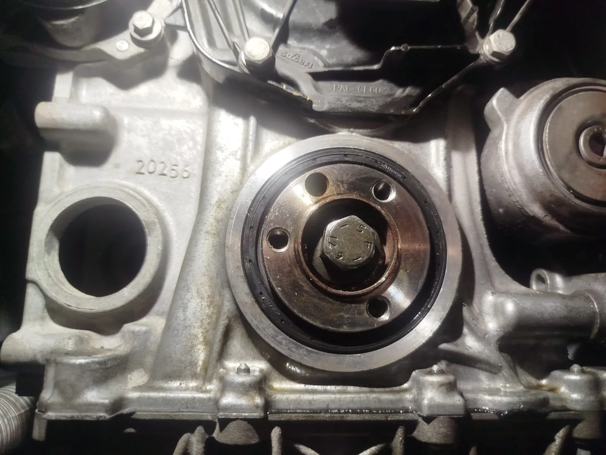

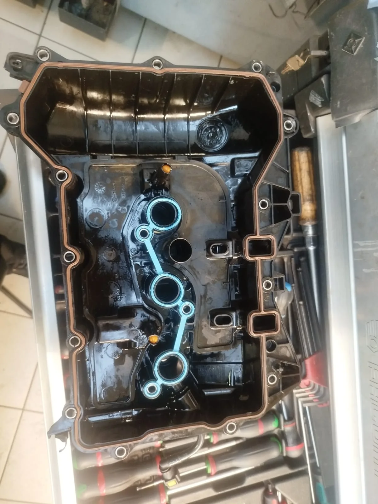
Foto 1 van 17
Rijd je met een 1.2 PureTech?
Laat de distributieriem controleren tijdens het onderhoud. Bij Garage Peter onderhouden en herstellen we voertuigen van alle merken, waaronder Citroën, Peugeot en Opel.
Garage Peter · Brugsesteenweg 51B · 8450 Bredene